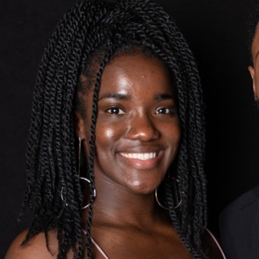
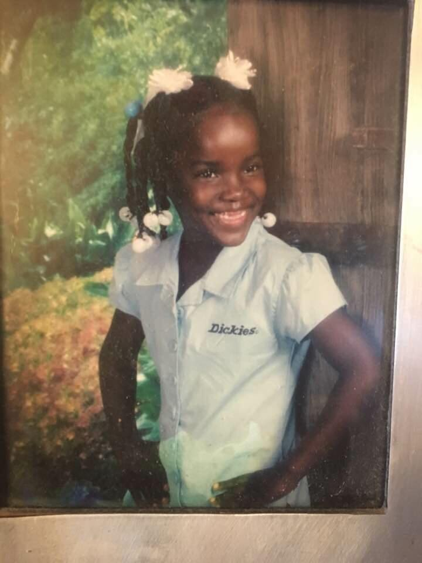
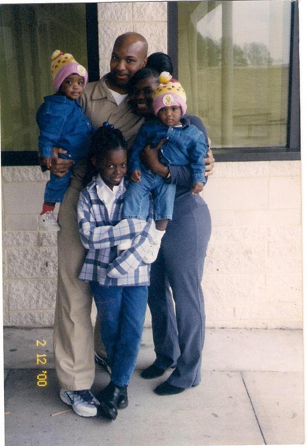
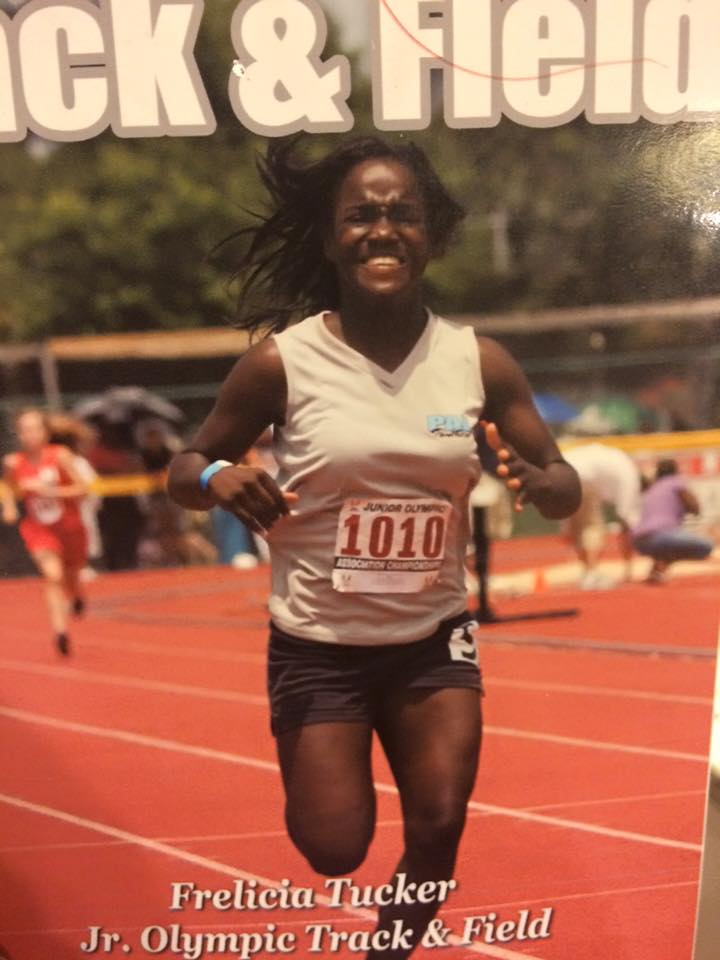
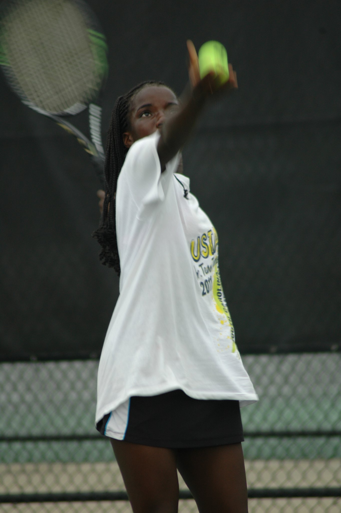
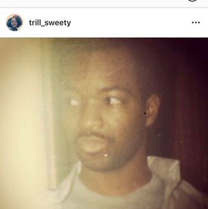

Frelicia Tucker's Portfolio
Welcome to my page! As you look around, I hope you learn a bit more about me and enjoy some seeing some of my favorite moments in life!
Baby Frelicia
I was born prematurely because I shared the room with my twin sister, Fredericka, who was eating all the food. I had to get outta there ASAP.
Some of my favorite childhood activities included
- reading
- exploring
- sports
- rapping
Bonus! Here's my favorite childhood rap: My name is Frelicia, I'm the baby of the twins. Every game I play, you know I will win. I love tennis and math. I can cook and bake. Give a shoutout to my girl Strawberry ShortCake! - baby Frelicia, 2008
I grew up with 2 beautiful sisters and a mom and a dad. We didn't always have much, but we had a good life. I didn't get to see my dad often because he was incarcerated, but I knew he loved and cared for me very much.
After his release, he helped sparked my interests in both STEM and sports by introducing to riddles and home science projects. Tragically he was killed only 2 years after being released, but I continue to remember his legacy by learning computer science and staying physically active today.
  Frelicia and Computer Science
I'm relatively new to the Computer Science world, but even so I've already learned so much! This is just a tast of a few of the projects I've completed:
- Seam Carving
- Building my own Shell
- Buffer Overflow
- DFA Extraganzas
- so many more
You can check out some of my COS work on my GitHub profile or look at my LinkedIn page to research other things I'm doing to grow professionally
Fun Facts!
Click below to learn a random fact about me!
Click Me!